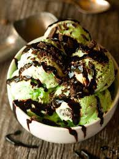

I couldn't in good nature do a project on food without covering (sometimes) my favorite part of the meal. It comes at the end, for me it's always sweet, and it usually involves ice-cream. But to go along with the theme here I will cover one recipe for a dessert and then I will pare the meals I have suggested with thier own desserts.
So the first time I made this I was so surprised at how simple the recipe was and how easy it was to make this incredible pie. So, to the store.
For the pie
So all you need to do is mix a whole lot of lime juice, the zest, sour cream, and sweetened condensed milk all together, whisked up nicely, pur it into your pie crust, bake it for ten minutes and Boom! But, you have a couple options for your crust. I like to make my own but you can just buy a pre-madecrust if your lazy. lol, jk, I know some of us are time sensitive. Making it it easy though, here's what to do:
So I think thats about it. As for the desserts for the meals I mentioned, with the BBQ there is nothing more American then apple pie, with a scoop of vanilla ice-cream of coarse. After eating some Tuna Mac my go to is mint ice-cream with chocolate syrup. And for Chicken Cordon Bleu, go buy some Ben & Jerry's.
